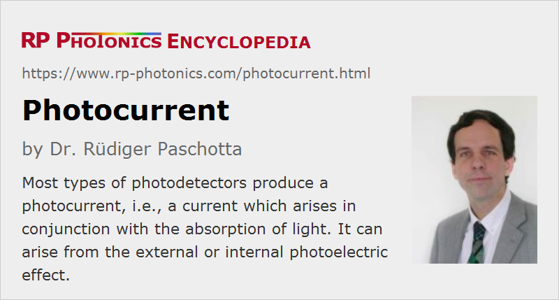

Photocurrent
Definition: an electric current which is induced by incident light in a photodetector
German: Photostrom
Category: physical foundations
How to cite the article; suggest additional literature
Author: Dr. Rüdiger Paschotta
Most types of photodetectors – e.g. photodiodes, phototransistors, phototubes and photomultipliers – are based on the generation of a photocurrent, i.e., a current which arises in conjunction with the absorption of light. That can involve somewhat different physical mechanisms:
- In vacuum tube photodetectors such as phototubes and photomultipliers, one exploits the external photoelectric effect.
- In semiconductor-based detectors, one uses the internal photoelectric effect, most often in a p–n or p–i–n junction. There are also metal–semiconductor–metal photodetectors, where a Schottky junction is used.
In many cases, one obtains at most one photoelectron per absorbed photon. Some of the generated carriers may be lost, i.e., not contribute to the photocurrent; that can be quantified with an internal quantum efficiency. The total quantum efficiency, also taking into account the incomplete absorption in the useful active region of a detector, will generally be lower. The resulting photocurrent is then
with the quantum efficiency η, the electron charge e and the photon energy hν. The proportionality factor S between photocurrent and optical power is called the responsivity.
The used operation voltage often has only a weak effect on the photocurrent via the quantum efficiency e.g. of a photodiode. Even in photovoltaic mode, i.e., with zero bias voltage, the quantum efficiency is not much reduced. Only with some forward voltage, the photocurrent starts to be reduced substantially.
For many detectors, the photocurrent is quite precisely proportional to the incident optical intensity or power over several decades, until saturation is reached at a certain level.
In addition to the actual photocurrent, there can be a dark current, which is independent of the incident light intensity.
Some type of detectors employ a multiplication mechanism for obtaining a substantially enhanced photocurrent. Such mechanisms are available both for devices based on the external photoelectric effect (photomultiplier tubes) and others based on the internal photoelectric effect (avalanche photodiodes). For such devices, a multiplication factor can be added to the above equation. That multiplication factor can strongly depend on the operation voltage.
At sufficiently high optical intensities, as can be reached with ultrashort pulses of light, one may obtain a photocurrent through two-photon absorption, even if the photon energy is below the band gap energy. The photocurrent is then proportional to the square of the incident power.
Conversion to a Voltage
A photocurrent is often converted to a voltage which is proportional to the current. The simplest method for that conversion is to let the photocurrent flow through an electrical resistance. That method, however, is not ideal, since it introduces a trade-off between responsivity and detector bandwidth. A better solution is to use a transimpedance amplifier, for example.
Noise of the Photocurrent
In an ideal case, a photocurrent would exhibit noise exactly according to the intensity noise of the incident light. That situation can well be approached with some photodiodes, having a high quantum efficiency; they can be used for detecting intensity noise at the shot noise level and even below (for squeezed states of light).
A reduced quantum efficiency – resulting for example from incomplete light absorption or the internal loss of carriers – leads to additional photocurrent noise; essentially, this is due to the random loss of some of the photoelectrons. Obviously, that problem cannot be solved by photocurrent multiplication, but only with an improved quantum efficiency.
Heating Effects
The photocurrent leads to heating of the photodetector. The heating power is the photocurrent times the applied bias voltage, in addition to the power resulting from the absorbed light. For typical bias voltages of e.g. 5 V or even 20 V, the heating through the photocurrent is substantially stronger than that due to light absorption. The photocurrent may thus have to be limited for operation with high bias voltage. Otherwise, the photodetector may be damaged – for example, by breaking of the semiconductor chip or removing a soldiering connection.
Position Sensing
The photocurrent from an ordinary photodetector does not provide information on the position of the incident light. However, there are position-sensitive photodetectors, where two or more photocurrents are measured, and the current distribution contains spatial information.
Questions and Comments from Users
Here you can submit questions and comments. As far as they get accepted by the author, they will appear above this paragraph together with the author’s answer. The author will decide on acceptance based on certain criteria. Essentially, the issue must be of sufficiently broad interest.
Please do not enter personal data here; we would otherwise delete it soon. (See also our privacy declaration.) If you wish to receive personal feedback or consultancy from the author, please contact him e.g. via e-mail.
By submitting the information, you give your consent to the potential publication of your inputs on our website according to our rules. (If you later retract your consent, we will delete those inputs.) As your inputs are first reviewed by the author, they may be published with some delay.
See also: photodetectors, photoelectric effect, quantum efficiency, dark current
and other articles in the category physical foundations
|  |
If you like this page, please share the link with your friends and colleagues, e.g. via social media:
These sharing buttons are implemented in a privacy-friendly way!